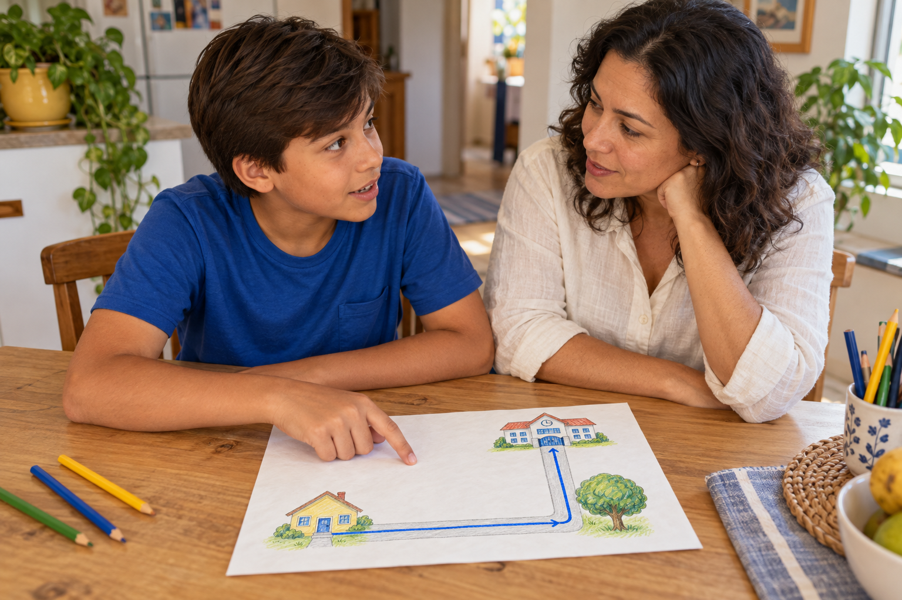
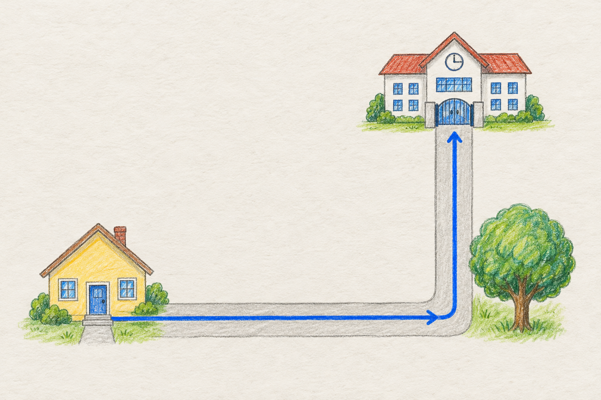
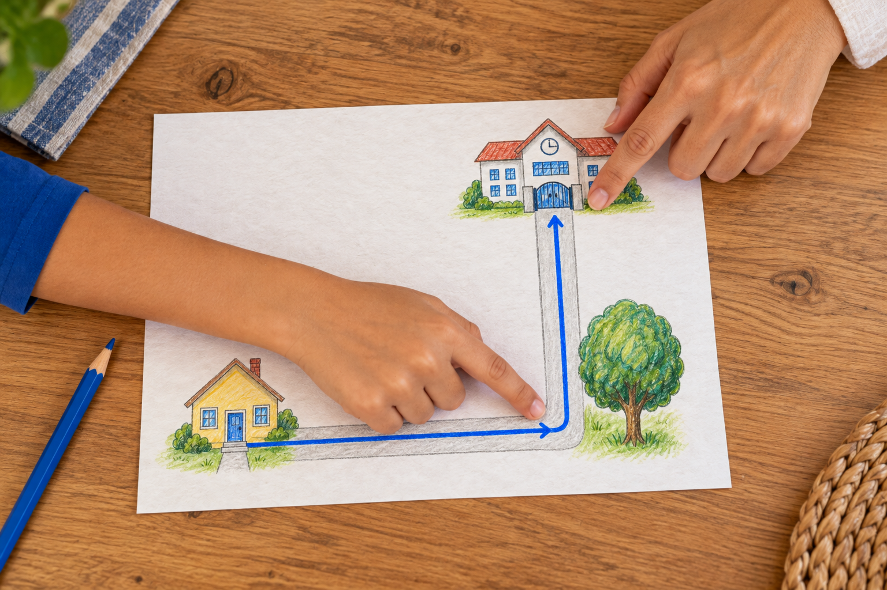
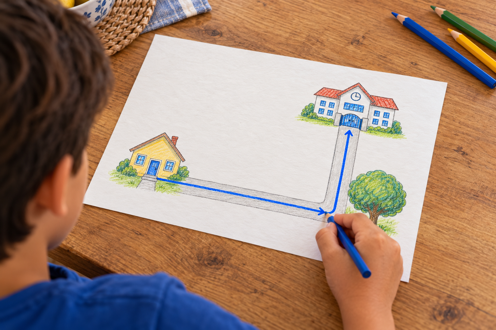
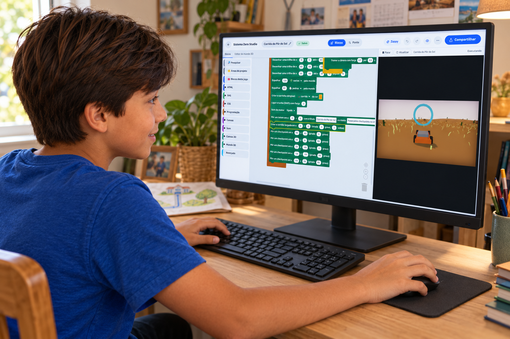

Teste em casa
Seu filho sabe o caminho.
Consegue explicar para outra pessoa chegar?

Seu filho sabe o caminho.
Consegue explicar para outra pessoa chegar?

Peça para ele explicar como chegar a um lugar conhecido, como o portão da escola.

ComeçoEsquinaPortãoOnde começar? Em que ponto virar? Qual referência procurar?
Quem conhece o lugar pode esquecer de explicar um pedaço.

Ao ouvir a dúvida da outra pessoa, ele percebe o que faltou dizer.
Criar um jogo também exige organizar instruções.

A criança precisa definir o que deve acontecer e em qual ordem.
Nesta corrida, o carro precisa passar por cinco anéis na sequência.
Quem criou o jogo definiu essa condição para completar a volta.
Se o carro pula um anel, a volta fica incompleta.
A regra faz o jogo conferir se o caminho foi cumprido.
Ao criar, a criança monta instruções e testa se elas produzem o resultado que imaginou.

Siga o perfil para conhecer mais exemplos.